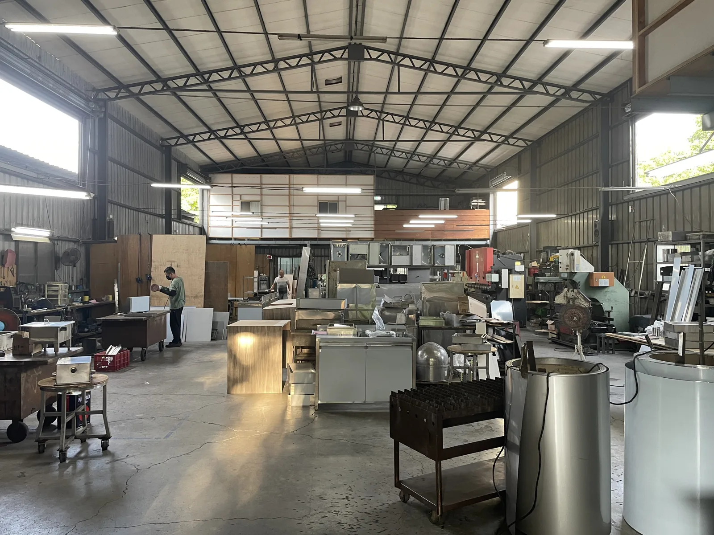
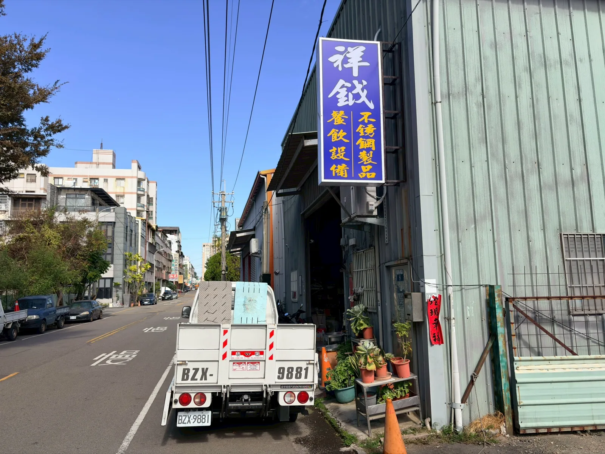

先理解，再製作。
每個空間都有自己的工作節奏。我們從需求、動線與使用習慣開始，找到適合你的設備配置。
01 / ABOUT SHYUAN
從 1996 年到今天，我們始終相信：一件可靠的製品，從每一個被好好對待的細節開始。

OUR STORY / 我們的故事
讓每一道美味，
都有一個堅實的後盾。
祥鉞餐飲設備股份有限公司成立於 1996 年，深耕台中，專注不鏽鋼製品的客製、製造與安裝。憑藉不鏽鋼加工經驗，我們以手工製作回應不同空間、不同產業的客製化需求。
我們與飲料店、連鎖品牌及不同產業的客戶合作，從需求討論、製品尺寸與設備配置，到安裝後的售後服務，都把現場真正需要的事，放在前面。
OUR COMMITMENT
每個空間都有自己的工作節奏。我們從需求、動線與使用習慣開始，找到適合你的設備配置。
選材、焊接、收邊與結構，每一處都影響每天的使用感受。用心處理，才能長久陪伴。
從規劃製造、現場安裝到後續維護，與廚霸王工業、冷凍冷藏設備業者合作，提供完整支持。

LET’S MAKE IT WORK.
從需求討論、客製製作到後續維護，給你可靠的支持。